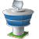
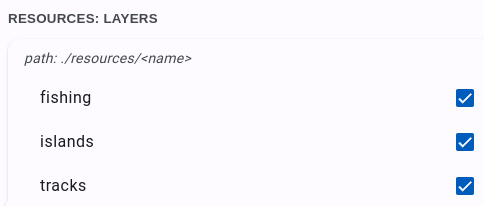
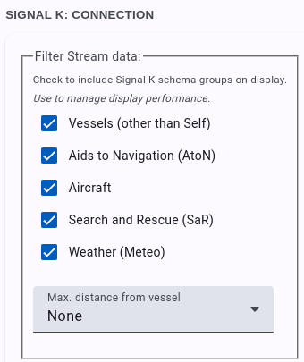

Introduction
Freeboard is an Openlayers based chart plotter that uses Signal K communication protocols and Signal K server features to provide the following functionality:- Moving Vessel / Map display with vessel Heading / Bearing and True Wind / Apparent Wind lines.
- Charts: display including both online and locally hosted.
-
Resources: List and filter Routes, Waypoints, Notes and
Regions.
- Add / Edit / Delete resources
- Set active route
- Import resources from GPX files.
-
Alarms / Notifications:
Displays both visual and audible notifications.
- Anchor Watch
- Depth
- Crossing Vessel / Closest Approach
- Instrument Panel: allows you to select from the apps installed on your Signal K server for display.
- Other Vessels: display other vessels on map.
- History Playback: replay timeseries data from the Signal K server.
Visit us at GitHub
Deprecations
Please note the following feature has been deprecated:-
Built-in PyPilot support - Freeboard-SK now uses the Signal
K Autopilot API exclusively and PyPilot settings have been removed
from PLugin Config. The Signal K Autopilot API aenables operation
with a wider range of autopilot devices.
To continue using autopilot functionality, install the pypilot-autopilot-provider plugin on the Signal K server.
Signal K Server
Note: Freeboard-SK requires the Signal K server to implement the following APIs:- Resources API: for the storage and retrieval of resources
- Course API: to set a destination or activate a route
- Autopilot API: to enable autopilot operations
Therefore Freeboard requires that the host Signal K server be able to service requests to the following paths for all functionality to be available:
- resources/routes, resources/waypoints, resources/notes, resources/regions - Serve resources as well as accept and persist resource data submitted to these paths.
- resources/charts - Serve chart resources.
- navigation/anchor, notifications/navigation/anchor - Serve and accept `position`, `maxRadius` values as well as calculate `currentRadius` and serve notifications.
- notifications/environment/depth - Serve notifications for belowKeel, belowSurface and belowTransducer.
- notifications/navigation.closestApproach .
- Standard Alarms - Serve notifications for notifications/mob, notifications/sinking, notifications/piracy, etc.
-
navigation/course (Signal K Course API) - freeboard makes
use of the course API to set a destination or activate a route.
It is expected that the server will initiate any subsequent calculations and related value updates.
Node Server Plug-ins:
When using Signal K node server you will need to install plug-ins to service the paths outlined above to enable the relevant Freebaord-SK functionality. Following is a list of recommended plugins that will enable the required server functionality:| Function: | Plugin: |
| Resource Storage and Retrieval | @signalk/resources-provider |
| Chart display | @signalk/charts-plugin |
| Course data (DTG, VMG, ETA, etc) | @signalk/course-provider |
| Anchor Watch | signalk-anchoralarm-plugin |
| Depth alarms | signalk-simple-notifications |
| Closest approach / Crossing vessel | signalk-derived-data |
| History Playback | signalk-to-influxdb |
| Buddy vessel identification and notifications | signalk-buddylist-plugin |
Display
Freeboard provides a moving Vessel / Map display for both your vessel and other vessels .
.
The menu bar along the left of the screen provides access to functions and menus that allow you control the map display.
The buttons along the right side provide access to quick-actions and experiments.
Left menu bar:
- menu Main Menu: Displays the main menu. (See menus for more.)
- warning Alarms: Displays the alarms screen to raise / clear alarms. (See alarms for more.)
- layers Resources: Provides access to resources such as Charts, Routes, Waypoints, etc. (See resources for more.)
- edit Draw Menu: Provides access to options that allow the drawing / editing of resources. (See menus for more.)
- navigation Heading / North Up: Toggles between Heading / North Up mode.
-
my_location
Follow Vessel On / Off:
Toggles Follow Vessel mode to keep the vessel at the centre
of the screen.
Note: this option is disabled when vessel position is not available. - center_focus_strong Centre Vessel on screen: Note: This option is disabled when vessel position is not available.
-
more_horiz
More Actions: Provides access to the following options:
- Clear / Refresh Vessel Trail: When trail is available from the server selecting this menu item will reload the trail from the server.
- Clear Destintation / Active Route: clears active destination or de-activates an active route.
- Clear Course Data: clears the current course data.
- Trail to Route: create a route from the current vessel trail.
- Show / Hide Course Data: Toggle the display of course data.
- Show / Hide Vessels: Toggle the display of other vessels.
- Show / Hide Notes: Toggle the display of notes.
- Show weather forecast data. Weather forecast data from the weather station closest to the vessel location. (Requires Weather API enabled in Server Admin -> Plugin Config -> Freeboard-SK)
- Settings: Open the Settings screen.
Right menu bar:
-
av_timer
Instrument panel: The instrument panel is used to display
selected Web App(s) installed on the Signal K server.
The default instruments shown are @signalk/instrumentpanel
Use the Settings screen to:- Select the Web App to display
- Select one or more Favourites that can be switched into view by using the arrow_back_ios and arrow_forward_ios buttons.
- You can also open the displayed Web App in it's own window by clicking the open_in_new button.
-
volume_off
Web Audio Off:
Displays if browser audio is NOT activated. If displayed then no
alarm sounds will be audible.
Click this button to enable web audio to hear alarm sounds. -
fullscreen
Fullscreen mode:
Displays application in fullscreen mode.
Available only on supported devices. -
visibility_off
Prevent Device Sleep:
Sets 'Wake Lock' mode for the current session to prevent the
device from entering sleep mode when no user input has been
received. See Settings for more.
Available only on supported devices. -
science
Experiments:
Provides access to experimental features which are being
considered for inclusion into the main application. See
experiments for more.
-
videocam
Video:
Displays the video stream that has been configured in
settings.
Available only on supported devices. - zoom_in_map Constrain map zoom: Limit minimum and maximum zoom levels to the zoom extent of the selected charts.
- invert_colors Invert Map feature text label color: Toggle the text label color of features to improve visibility on dark map backgrounds.
- alt_route Display Autopilot console: Available when the Autopilot API is detected on the server. Displays the autopilot console enabling operations permitted by the Autopilot API.
- add_location Drop Waypoint: Place new waypoint at vessel location.
Context "Right click" Menu : Click the right mouse button anywhere on the map to display a context menu.
The options available may vary based on the current application state.
Note:The "Add Note here" option is only available at zoom levels where Notes are visible on the map.
Vessel: displays the current position and heading of your vessel.
Note: Vessel icon is not displayed when vessel position is not available.
Additionally, Heading, Bearing True Wind Direction and Apparent Wind Angle lines are displayed with the vessel when the related data is available.
|
|
Heading |
|
|
bearing |
|
|
True Wind |
|
|
Apparent Wind |
Inactive Vessel: displays the last received position and heading for a vessel for which an update has NOT been received within the time period selected in Settings->Vessels->Mark AIS Target Inactive After (default = 6 mins).
Note: Vessels are removed from display after there has been no update received within the time period selected in Settings->Vessels->Remove AIS Target After (default = 9 mins).
Clicking on a vessel icon will display an information window containing vessel data and available actions.
Vessels can be flagged to identify them when there is a large number of vessels in the vicinity.
alt_route Autopilot
Freeboard-SK supports the Signal K Autopilot API which enables common operations to be performed including:- Engage / Disengage the autopilot
- Setting the operation mode e.g. compass, route, gps, etc.
- Setting and adjusting the target heading
- Dodging obstacles
layers Resources / Layers
Freeboard provides functionality for in-built Signal K resource types: routes, waypoints, charts, notes and regions.Each resource type is displayed in a separate map layer which can be controlled from the layers toolbar button.
The menu displayed when clicked will contain options for the Signal K specified resources (Routes, Waypoints, Notes, Charts) as well as additional available resource paths enabled in Settings.
Additionally resources can be exported to a GPX file by selecting the save Export menu.
- directions Routes: Displays a list of available Routes.
- Filter Routes: Type into the text box to filter the list of routes.
- Display Route: Check the checkbox to display the route on the map.
-
Delete Route: Click
delete and you will be prompted
to delete the route.
-
Points: Click flag to
view a list of route points where the following actions can be
performed:
- Set the destination point: If displayed route is the Active Route, click a point to set it as the current destination along the route.
-
Re-order points: Use the handle to drag points to a
new position in the list.
Note: If points of the Active Route have been re-ordered then you will not be able to set the destination point until changes have been applied.
- Notes: Clicking local_offer displays a list of Notes associated with the route. From this screen you can add, edit or delete notes.
-
Activate: Clicking
near_me sends a message to the
server to set this route as the Active Route.
The start of the route is set as the current destination.
Use the Previous and Next point options in the more_horiz menu to select the destination point. - Clear: Clicking clear_all sends a message to the server to clear the Active Route.
- Edit Properties: Click edit to edit route Name and Description.
- Move: Clicking touch_app allows route points to be re-positioned.
Trail to Route
You can create a route from the current Vessel trail by selecting the option from either the context menu or the more_horiz menu.

-
The Trail to Route screen is displayed and the route generated
from the locally stored vessel trail is shown.
-
Check the Include trail from server if you want to
include trail data stored on the server.
Recommended if you have the Get Trail from server option checked in Settings. - Slide the tolerance control to vary the conversion algorithm in order to get the desired point distribution.
- Once satisfied with the generated route click Save to save the route to the Signal K server.
- location_on Waypoints: Displays a list of available Waypoints.
- Filter Waypoints: Type into the text box to filter the list of waypoints.
- Display Waypoint: Check the checkbox to display the waypoint on the map.
-
Delete Waypoint: Click
delete and you will be prompted
to delete the waypoint.
Note: A waypoint may be associated with a route. so take care when deleting waypoints! - Notes: Clicking local_offer displays a list of Notes associated with the waypoint. From this screen you can add, edit or delete notes.
- Go To: Clicking near_me sends a message to the server to set this waypoint as the target to navigate to. The server should then send navigation data in relation to this location.
- Clear: Clicking clear_all sends a message to the server to clear the current destination.
- Center: Clicking center_focus_strong positions the map so the waypaoint is displayed in the center.
- Edit Properties Click edit to edit waypoint Name and Description.
You can also click on a Waypoint on the map to display an information window with additional actions.
- Move: Clicking touch_app allows waypoints to be re-positioned.
- local_offer Notes: Displays a list of available Notes.
- Filter Notes: Type into the text box to filter the list of notes.
-
Draft Notes: Click
border_color to display only
draft notes in the list.
- Display Notes: Check the checkbox to display notes on the map.
- Group: Clicking styles will display a list of notes in the same group.
- Properties: Click info_outline to open the note information / editor screen.
Freeboard uses specfic key / value pairs that are defined within the
properties: {} block of a note: - draft (boolean): Indicates whether the note is in draft mode. Used by the server to determine the visibility or scope of where the note is made available.
- readOnly (boolean): Used by Freeboard (when meta._attr is not available) to determine whther the note is editable.
properties: { draft: true, readOnly: false }
Freeboard supports the following chart types:
- Image Tiles: The most popular format for serving maps, uses a collection of image tiles (usually in .png or .jpg) format loaded using X,Y & Z identifiers e.g. http://host_path/{z}/{x}/{y}.png
-
Vector Tiles: Provided in a similar way to Image Tiles,
the tiles contain vector information rather than a raster image.
This makes them smaller in size and the tiles are "drawn" on to
the display.
Vector tiles normally require a related "STYLE" to display the elements with specific colors, etc.
Note: Vector tiles that are not sourced via a mapbox style definition (mapstyleJSON), will have a very basic style is applied to color lines and fill polygons.
S57 ENC converted to vector tiles: Freeboard-SK is able to display S57 ENC charts that have been converted to vector tiles with s57-tiler.
Note: Only unencrypted ENC's are supported (no S63 support).
- mapstyleJSON: A mapbox style JSON file which defines sources and styles of vector tiles maps.
- WMS: A Web Map Service which serves geo-referenced image tiles.
- WMTS: A Web Map Service which serves pre-rendered tiles.
- PMTile (Protomap): A single-file archive format for tiled data which can be hosted on commodity storage.
- Filter Charts: Type into the text box to filter the list of charts.
- Re-order charts: Click import_export to arrange the chart stack to ensure charts are displayed in the correct order. Drag and drop the charts within the list to chage the order.
- Chart Bounds: Click select_all to display the bounds of the listed charts. The bounding rectangle of each chart will be overlayed on the current map display.
- Add Chart Source: Click add to add a new chart source (i.e. WMTS, WMS, TileJSON, Mapbox Style). See the Freeboard-SK Wiki for more details.
- Properties: Click info_outline to display the chart properties.
- Display Chart: Check the checkbox to display the chart.
- OpenStreetMap
- OpenSeaMap
Local Charts hosted on the Signal K server are identified with the map icon.
Charts are displayed in descending order of scale to ensure more detailed charts are on top.
saveExport (to GPX)
- Click the layers Resources toolbar button and select the save Export option from the menu.
Additionally, the locally stored vessel trail can be saved as a GPX track.
Note: this option is only available when Get Trail from Server setting is not selected.
- Waypoints: Click the checkbox to select all Waypoints or expand the list and select the Waypoints to export.
- Routes: Click the checkbox to select all Routes or expand the list and select the Routes to export.
- Tracks: Click the checkbox to select all Tracks or expand the list and select the Tracks to export.
uploadImport (GPX, GeoJSON)
- Click the layers Resources toolbar button and select the upload Import option from the menu.
Depending on the type of file selected, you will be presented with one of the following.
GPX File
- Waypoints: Click the checkbox to select all Waypoints or expand the list and select the Waypoints to import.
- Routes: Click the checkbox to select all Routes or expand the list and select the Routes to import.
GeoJSON Feature Collection
The following GeoJSON features are supported and are mapped to one of the Signal K resource types:
| GeoJSON feature type | Signal K Resource type | |
| LineString | arrow_forward | Route |
| Point | arrow_forward | Waypoint |
| Polygon | arrow_forward | Region |
| MultiPolygon | arrow_forward | Region |
| MultiLineString | arrow_forward | Track |
Check out the Freeboard WIKI for more details.
{
"type": "FeatureCollection",
"features": [
{
"type": "Feature",
"geometry": {
"type": "LineString",
"coordinates": [..]
},
"properties": {
"name": "myRoute",
"description": "a GeoJSON route"
}
},
{
"type": "Feature",
"geometry": {
"type": "Point",
"coordinates": [..]
},
"properties": {..}
}
]
}
For Track data see Resource Paths
uploadResource Set
Freeboard allows you to upload resource data stored in files to `non-standard` resource paths that accept `PUT` or `POST` requests.To upload data:
- Select the uploadResource Set menu option.
-
Select the desired destination path from the drop-down list.
Note: only paths detected under `signalk/v2/api/resources` are listed. - Click and select (or drop) the file containing the resource data.
- Click Load to upload the file contents to the server. Important: Freeboard does not attempt to validate the file contents in any way so please ensure you are uploading appropirate content for the selected destination.
anchor Anchor Watch
Freeboard integrates with the signalk-anchor-alarm plugin to facilitate the setting of an anchor watch alarm.- Drop and set (calculated radius using position)
- Drop and set (specified radius)
- Manual set (calculated radius using rode length)
1. Drop and set (calculated radius using position)

In this mode of operation, after dropping the physical anchor, slide the toggle to Drop then:
- Let out the rode and when complete click Set. This will set the anchor position and the maximum radius. The server will commence watching the vessel position and raise an alarm if the vessel moves outside the maximum radius distance.
2. Drop and set (specified radius)
In this mode of operation, after dropping the physical anchor:
- Check Set Radius.
- Set the desired alarm radius (in meters).
- Slide the toggle to Drop
3. Manual set (calculated radius using rode length)
In this mode of operation, after dropping the anchor, and letting out the rode:
- Check the box next to the Manual Set button.
- Set the rode length (in meters).
- Click the Manual Set button.

The alarm radius can be adjusted by moving the Set Radius slider to the desired distance.
The Anchor Position can be shifted by using the arrow buttons OR on the map:
- Click the anchor icon (to enter modify mode)
- Drag the anchor feature to the new location.
- Click Finish to exit modify mode.
When the server calculates that the maxumum radius has been exceeded it sends a notification which triggers the alarm message.

An alarm message will be either just Visual or also Audible depending on the content of the notification from the server. An audible alarm can be muted by clicking the Mute button.
Acknowledging the alarm will minimise the alarm icon.
The icon will be displayed until the alarm has been cleared.
Clicking the icon will re-display the alarm message.
To clear the alarm and remove it from the screen click Acknowledge.
warning Alerts & Alarms
Freeboard will display Alerts and also provides the ability to raise alarms.When notifications are received, they are actioned as alerts based on their priority and method:
- Visual only (popup at the top of the screen)
- Sound only
- Visual & Sound as specified by the notification message received from the Signal K server.
The following Alarms can be raised:

To RAISE an alarm:
- Click the warning button on the toolbar to display the Alerts List:
- Click the RAISE button and select the desired alarm type.
Freeboard allows alerts to be Acknowledged and / or Silenced.
- Silencing the alert will mute any sound and the alert card remains visible.
- Acknowledging the alert will close the alert card and silence any sound. The alert remains an entry in the Alert List.
- The Alert is cancelled.
- The alert condition is returned to a normal state.
- The notification for the alert path value is null.
Vessels
Freeboard displays vessels with the following icons:
- Show / Hide Vessels layer on the map
- Providing the ability select which Vessels to display.
This vector will only be displayed at higher zoom levels so as to reduce screen clutter.
You can select whether to use either True or Apparent wind data for displaying the vector.
This choice can be made in the Settings screen.
To Show / Hide the Vessels Map Layer:
-
From the more_horiz menu select
either:
- visibility Show Vessels
- visibility_off Hide Vessels
To Select Vessels:
- From the menu menu select directions_boat Vessels.
- Entering text to filter by vessel name.
- Toggling on Ship type to display based on their AIS Ship Type.
- Toggling IMO Only to show only vessels with IMO registration data. (This can be used in conjunction with the previous to options.)


- Filter Vessels: Type into the text box to filter the list of vessels.
- Display Vessel: Tick the checkbox to display the vessel on the map. Freeboard by default will display all vessels
- info_outline Info: Click this button to display the vessel properties.
-
center_focus_weak
Focus: Click this button to set this vessel as the
active vessel and direct all actions to this vessels path on
the Signal K server.
Note: Actions may fail if the Signal K server does not support PUTs to paths other than `vessels/self` - clear_all Unfocus: Click this button to reset the active vessel to self.

Note:If the Vessels layer is hidden selections made in this screen will not be displayed until the Vessels layer is made visible.
Playback History
Freeboard provides the ability to request historical data playback from the server.Note: Selecting this option from the menu disconnects the realtime stream.
Note: Playback history must be supported by the server.
- menu Main Menu: Access the history Playback History option from the Main menu.

- Context: to choose vessel(s) data. self or all
- Start Date: Date of playback stream start
- Start Time:Time of playback stream start
- Playback Rate: Rate of playback. 1= real-time, 5= 5 x real-time
Click Cancel to re-start the real-time data stream.
Once started, Playback Mode is identified by the addition of the cancel button to the menu bar.
- Click cancel to end playback and return to realtime data stream.
settings Settings
The Settings screen is where you can configure Freeboard and it consists of the following sections:DISPLAY:
This section provides choices about how information is displayed.
-
Instrument Panel App: Select from a list of installed
applications the one you wish to be displayed in the Instrument
Panel.
Note: The application selected should be responsive to display correctly within the space afforded by the instrument panel. - Parameters: Enter parameters that will be appended to the Instrument App url.
-
Halt App on hide: When checked the selected Intrument Panel
App will be stopped when the Panel is hidden.
To save resources on your device when the instrument panel is hidden clear this checkbox. -
Favourites: Use this to display a list of Web Apps
installed on the Signal K Server which can then be selected as a
Favourite.
These selected Web App can be "switched in" for display in the Instrument Panel. - Lock Follow Vessel: Check this box to remain in "Follow Vessel" mode when map is panned / moved.
- Do not Play Sounds: Check this box if you do not want any sounds played. (Overrides ALARM_METHOD in notification message.)
- Show DEPTH Alarm Messages: Check this box if you want received DEPTH notifications from the Signal K server to be displayed as an alarm message.
- Alarm Smoothing Time: Once the DEPTH alarm message has been acknowledged and the notification state has returned to Normal, this is the length of time that the notification must remain in Normal state before the alarm is re-triggered.
-
Prevent Device Sleeping: Check this option to set the
devices WakeLock upon start-up which prevents your device
from entering sleep mode.
Note: this setting is only available on devices / browsers which support the API.
This can be set for the current session by clicking the visibility_off button on the right of screen. -
Dark Mode Setting: Use this setting to control the display
theme (Light or Dark).
-
Use OS Setting - Selecting this option tells Freeboard
follow the preferred display mode set by the hosting
system.
Note: This uses the prefers-color-scheme CSS media setting, if the browser does not support this feature then the Light theme is selected. - Use Signal K Mode - Set the display mode using the value of the environment.mode path. Dark theme is used when value is "night".
- On - Turn Dark Mode on.
-
Use OS Setting - Selecting this option tells Freeboard
follow the preferred display mode set by the hosting
system.
- Feature label zoom level: Select the zoom level at which labels for features on the map appear. Labels will be hidden at zoom levels below this value.
- Popover close with button: Select this option in order to a close a popover using a button rather than just clicking outside of it.
- Double click to Zoom: Select this option to enable zooming the map with a double click.
- Graphics Style: Select this option in order to a close a popover using a button rather than just clicking outside of it.
- Boundaries: Select from Plain or Symbolized.
- Colors: Select from 2 or 4 colors.
- Shallow Depth: Enter the depth in meters.
- Safety Depth: Enter the depth in meters.
- Deep Depth: Enter the depth in meters.
UNITS & VALUES:
This section provides choices about the units and values used when displaying data.
Distance Units: Kilometres / Nautical Miles
Depth Units: Metres / Feet
Preferred Paths: Click this button to display show a list of available source paths for specific values i.e. Heading, Wind Speed, etc.
Select the path from which you want the value used for the specfic vessel attribute.
Click Save to ensure your selections are applied.
Note: The paths available will depend on the data stream received from the Signal K server.
Prefer True / Magnetic values: True / Magnetic
Instructs Freeboard to use either the True or Magnetic value path for paths that are not listed in Preferred Paths. (Defaults to True)
Note: If the selected path type is not within the received data stream NO value will be displayed. Freeboard will NOT fallback to other available path values!
COURSE:
This section provides settings for course navigation.
Auto-advance to nextpoint on arrival: Check this option to automatically advance to the next route point once the target notification has been received.
Notification type to use: Select the notification from the server to use to trigger the advancement to the next point.
Choose either:
- perpendicularPassed (advancement occurs immediately notification is received.)
- arrivalCircleEntered (advancement occurs once Time to Wait has elapsed after notification has been receieved.)
Select the period of time to elapse before the destination is set to the next route point.
VESSEL:
This section provides choices when displaying data for the vessel.
-
Fixed Location Mode: Select when operating from a fixed
location e.g. building, etc.
Selecting this mode will change the vessel icon to 
Enter the latitude and longitude of the fixed location. - Display Wind Vectors: Select to display wind vectors for the vessel on the map.
- Display Laylines: Select to display laylines when navigating to a destination.
-
Heading Line Length: Select length of heading line
displayed on the map.
- Default: Calculates the length of the line displayed based on the vessel SOG and the map scale.
- (x) NM Length of the line to display.
- COG Line: Display a line to the predicted location based on the selected time and the vessel's current SOG.
-
Display Vessel Trail: Check this box if you want to display
the vessel trail.
By default Freeboard will display the vessel trail using a local cache maintaining up to 5000 points at a 5 second interval.-
Get Trail from Server: Check this to retrieve vessel
trail data from the server at the path
signalk/v1/api/self/track.
-
Use the slider to set the length of track to retrieve
from the server in hours. Time is relative to the current
time.
The Resolution settings define the number of track points returned by the server for the following time windows:- Last hour (default = 5 secs)
- 1 hour -> 24 hours (default = 1 min)
- > 24 hours (default = 5 min)
Trail data received from the server undergoes temporal simplification to minimise the data used to display the trail whilst maintianing integrity.
-
Get Trail from Server: Check this to retrieve vessel
trail data from the server at the path
signalk/v1/api/self/track.
OTHER VESSELS:
This section provides choices when displaying data for other vessels.
- Mark AIS Target inactive after: Maximum time (in minutes) elapsed between updates before the vessel is displayed as inactive.
- Remove AIS Target after: Maximum time (in minutes) elapsed between updates before the vessel is removed from map.
- Wind Vector Value: Wind True / Wind Apparent Value used to display wind vector for other vessels displayed on the map.
- Wind / Trail Zoom Level: The minimum Zoom level at which other vessels wind vector and trails will be displayed. (Default=15)
- Show Trails: Select to display trails of other vessels on map. Note: length of trail is limited in length to approx 1hr of data.
- Hide Moored: Select to hide vessels with a state of 'moored'. Note: Display is updated when next vessel update is received.
- Hide Anchored: Select to hide vessels with a state of 'anchored'. Note: Display is updated when next vessel update is received.
-
COG Line: Select to show / hide COG vector for AIS
vessels.
Note: COG line length is calculated for 10 mins duration.
RESOURCES: NOTES
- Display Notes on Map: Un-check this box if you do not want to display NOTES on the map.
- Notes Zoom Level: Select the zoom level at which NOTES will appear on the map.
-
Fetch Notes radius: Select the radius from the centre of
the displayed map within which NOTES will be retrived from
the server.
A request to fetch Notes is triggered when the map centre moves more than 50% of this value. -
Notes Fetch Filter: This field allows you to specify a
parameter string that will be used when fetching Notes from the
Signal K server. This can be useful to reduce the number of Notes
records returned or to only return Notes in a particular area.
The string can contain %Tokens% to specify specific values.
e.g. ?position=[%map:longitude%,%map:latitude%]&distance=%note:radius% -
Edit Group Names: By default the group attribute of
a note will not be available in the note editor screen.
Check this box if you want to be able to edit the group attribute. -
Position Group Note: By default adding a new note to a
group will not prompt you for the psoition of the note.
Checking this box will prompt you to place the note by clicking on the map.
Valid tokens include:
- map:latitude: Latitude at centre of Map
- map:longitude: Longitude at centre of Map
- map:zoom: Map zoom level
- note:radius: The value set in the Fetch Notes within field
RESOURCES: VIDEO
Freeboard provides the ability to utilise the "Picture in Picture" (or PiP) feature in supported browsers to display a video stream from a source such as a video camera, etc.
- Enable Video: Check this box to enable the display of a PiP video stream.
- URL: Enter the url of the video stream source.
Click this button to open the video stream. The stream will start to play and the video window can be moved, resized and playback controlled using the controls provided by the browser.
RESOURCES: LAYERS
Freeboard provides the ability display feature data contained in compliant JSON format layers on the map. The available resource paths are listed in this section and can be selected to enable them for use with Freeboard.
Note: This functionality requires that you have configured the Resources Provider plugin to serve the required resource paths. 
Two types of resource layers are supported:
- Tracks
- Resource Sets
- Fetch Radius: When set, will only fetch resource set features with a position that is within the specified distance from the current map center. Select 0 to retrieve all features.
Tracks:
The Track data structure supported by Freeboard is generated via the Load from GPX functionality.What Freeboard requires is that the /signalk/v2/api/resources/tracks path is available from which to write and retrieve track data.
This requires the following action:
- Configure the Resources Provider plugin to serve the tracks path.
- Re-start the Signal K server
- Once the server has re-started Tracks will appear in the list of available resource paths.
- Select Tracks and this will display the show_chart Tracks entry in the layers layers list.
Data from all other resource paths that you enable in Freeboard Settings will be treated as ResourceSets.
ResourceSets are a non-standard Signal K resource format that can be created to form collections of features that can be displayed in layers on the map. They are a JSON file with a specific structure which can be created using any text editor.
The JSON structure chosen aligns closely with the current Signal K resource specification and adopts the use of GeoJSON FeatureCollection.
The ResourceSet file should be stored on the Signal K server in the folder used as the source for that path.
The file name should be a valid uuid (e.g. 0d95e282-3e1f-4521-8c30-8288addbdb69).
Check out the Freeboard Wiki for more details regarding the file format.
SIGNAL K CONNECTION:
This section allows you to set parameters for the Signal K stream connection to provide control over the type and number of features displayed on the map.
Note: The Signal K data stream can deliver a large volume of data depending on the data sources you have connected. The processing of large quantities of data can have a significant impact on application performance when many items are displayed on the map.

Filter Stream Data: Use the options in this section to select which Signal K context(s) will be used to display features on the map.
- Vessels: Display vessels (other than your own) on the map. (Default is checked)
- Aids to Navigation: Display AtoNs on the map. (Default is checked)
- Aircraft: Display aircraft on the map. (Default is unchecked)
- Search and Rescue: Display SaR beacons on the map. (Default is unchecked)
- Meteo (Weather): Display weather stations on the map. (Default is unchecked)
-
Max Distance from Vessel: Set the distance from your vessel
that targets must be within to be displayed on the map.
The distance represents the radius of a bounding box around your vessel.
Selecting None (default) will display all received targets.
tune URL Parameters
The following url parameters can be used to initalise values for:- Zoom Level
- North / Heading Up
- Move Map
- Signal K Host
- Port number
When one or more of these parameters are present, the supplied values will used to override stored configuration at start up.
Example: Start Freeboard-SK at zoom level to 15.
http://server:3000/@signalk/freeboard-sk?zoom=15
Example: Start Freeboard-SK in North up mode.
http://server:3000/@signalk/freeboard-sk?northup=1
or
http://server:3000/@signalk/freeboard-sk?northup
Example: Start Freeboard-SK in heading up mode.
http://server:3000/@signalk/freeboard-sk?northup=0
Example: Start Freeboard-SK in moving map mode (keep vessel
centered).
http://server:3000/@signalk/freeboard-sk?movemap=1
or
http://server:3000/@signalk/freeboard-sk?movemap
Example: Start Freeboard-SK with moving map mode turned off.
http://server:3000/@signalk/freeboard-sk?movemap=0
Example: Connect to Signal K server at supplied address and port.
http://server:3000/@signalk/freeboard-sk?host=192.168.86.32&port=3100
science Experiments
New features being assessed / tested for inclusion in Freeboard are referred to as Experiments.
To try out these features you will need to check the Experimental Features option in Settings.
Once enabled, you can access these features via the science button.
Note: Some experiments will require configuration settings to be made in the Signal K server Admin console under Plugin Config -> Freeboard-SK.